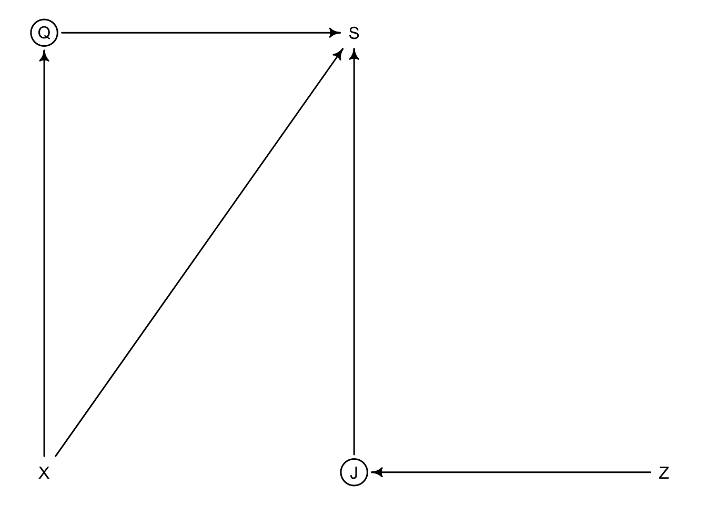
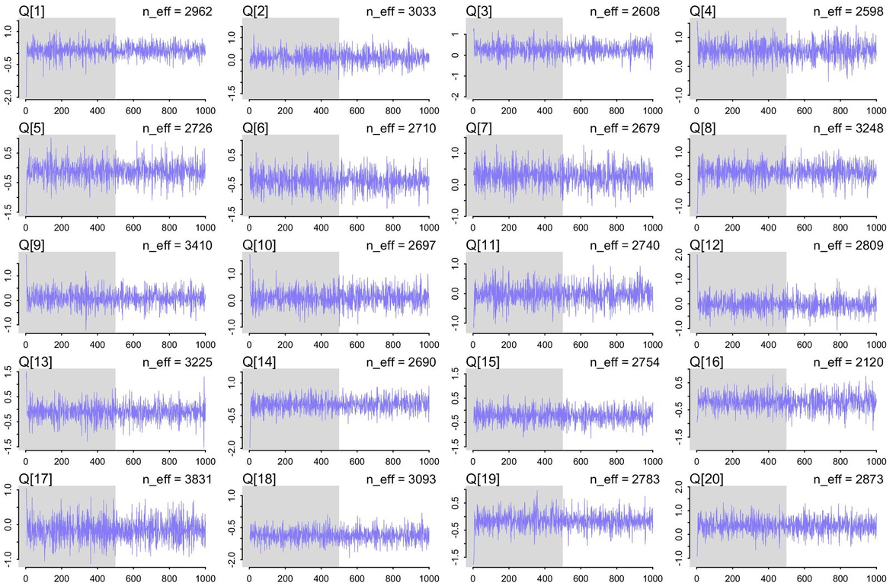
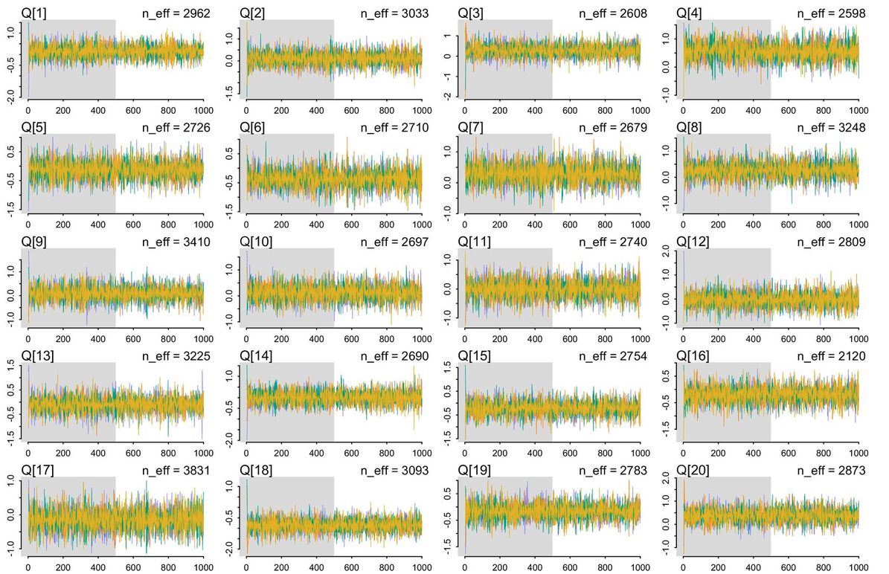
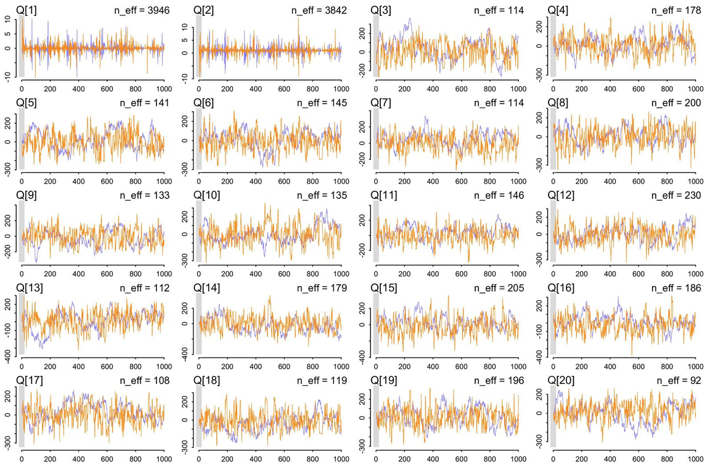
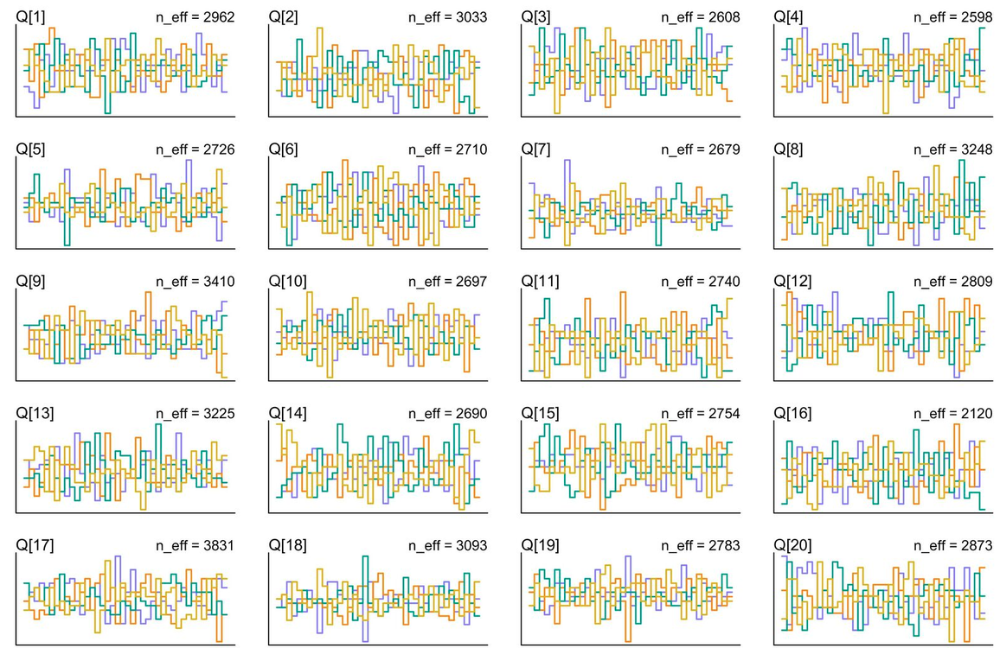
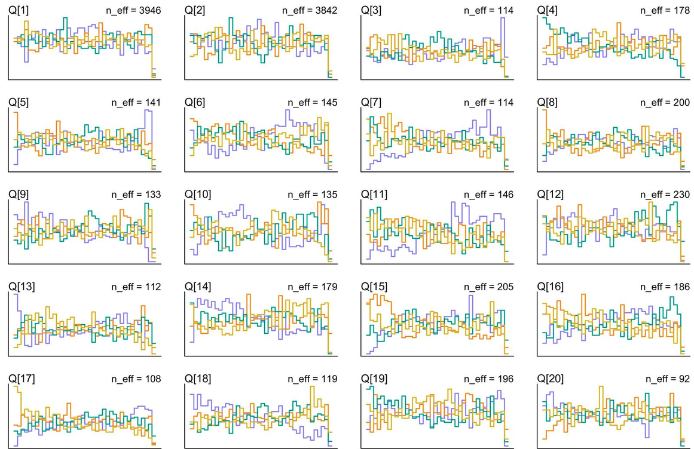
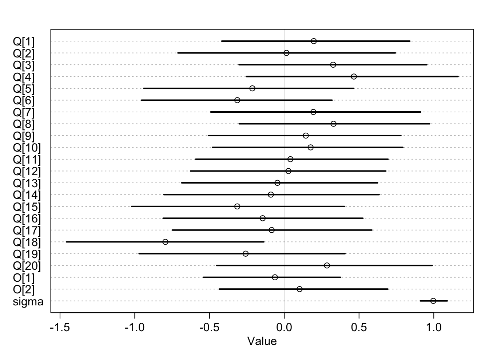
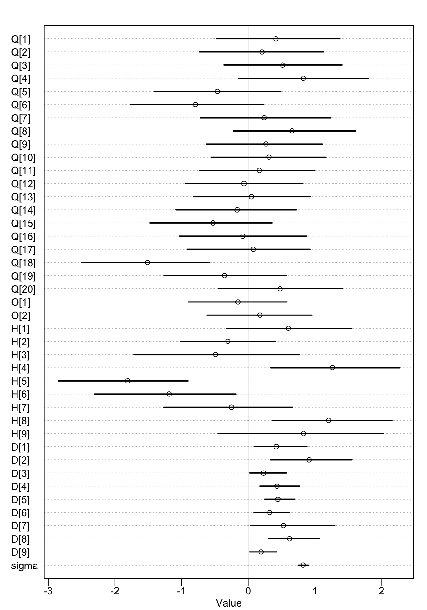

library(rethinking)
data("Wines2012")
d <- Wines2012Lec 8: MCMC
Introduction
Problems so far with our data analysis:
- Many unknowns (only used a few parameters in previous examples)
- Nested relationships (only covered additive relationship so far)
- Bounded outcomes (we haven’t dealt with count outcomes yet, no negative numbers).
- Difficult calculations
Computing the Posterior
- Analytical approach (often impossible)
- only in simplest possible problems
- Grid approximation (very intensive)
- Always usable in principle, but not computationally practical
- Quadratic approximation/Laplace (limited)
- Similar to Maximum Likelihood Estimation
- But many distributions that are not approximately Gaussian - need something more general
- Markov chain Monte Carlo (intensive)
- Can be used on wide range of arbitrarily complex problems
Markov chain Monte Carlo
Usual use: draw samples from a posterior distribution
Chain: sequence of draws from distribution
Markov chain: History doesn’t matter, just where you are now
Monte Carlo: Random simulation
Metropolis algorithm: simple version of MCMC
Easy to write, very general, often inefficient
What’s great about it: We don’t know the distribution, we’ve defined its constraints and have some data that logically decides what it must be, but we cannot do the integral calculus - can still sample from it using an algorithm like this (using random numbers)
Trade-off: step size and accuracy of proposals
Large step size - less accuracy but faster to traverse posterior distribution
Small step size - more accurate but slower to traverse posterior distribution (exploration)
Many MCMC
- Best ones use gradients
Gradients
Normal probability distribution → bell curve (a hill)
Take the log-probability and multiply it by -1 → perfect parabola where the width of parabola is proportional to sigma, location on x-axis is mmu (a valley)
The lowest point of the valley has the highest probability - marble rolls down to the high probability space
Hamiltonian Monte Carlo
Release the marble into the bowl. Flick it from random location, let it go, stop it at random, sample that location, repeat. Like running a physics simulation. It exploits randomness.
Can tune the step size, define coarseness and speed.
Long step sizes: U-Turn phenomena (returns to where it started)
Small step sizes: takes long time to traverse the bowl
Finds a path through the curvature of the space.
HMC needs gradients (to know which direction is uphill vs downhill). How to get them? Write them yourself or…
auto-diff: takes derivatives of your code. Every component function of code has known derivative. Gives you symbolic derivatives of model code. (ML and “backpropagation” - same thing)
- Use
stan
How to Use HMC
Example: The Judgment at Princeton
library(dagitty)
wine_dag <- dagitty("dag{
Q [unobserved]
J [unobserved]
Q -> S <- J
X -> Q
Z -> J
X -> S
}")
coordinates(wine_dag) <- list(x=c(Q =1,S=2,J=2, X=1, Z=3),
y=c(Q=1,S=1, J=2, X=2, Z=2))
drawdag(wine_dag)
Q: Wine quality (unobserved)
J: Judge (unobserved)
X: Wine origin (Blinded to origin to remove direct effect)
Z: Judge origin (likely cause of judge biases)
S: Score (Observed)
No confounds. But estimand requires stratification by the wine origin (potential confound)
Estimand: association between wine quality and wine origin. Stratify by judge; it is NOT a confound, but we do so beacuse judge is competing cause of the score (have their own biases, discriminating, non-discriminating) → obscures ability to estimate score efficienctly.
Note
Build up from a small simple model with one explanatory variable, make sure it works (Don’t build the end-goal model all at once)
\[S_i \sim \text{Normal}(\mu,\sigma)\]
\[\mu_i = Q_{W[i]}\]
\[Q_j \sim \text{Normal}(0,1)\]
\[\sigma \sim \text{Exponential}(1)\]
dat <- list(
S=standardize(d$score), # original judgment is 1-20 pts
J=as.numeric(d$judge),
W=as.numeric(d$wine),
X=ifelse(d$wine.amer==1,1,2), # index label for R
Z=ifelse(d$judge.amer==1,1,2) # index label
)
mQ <- ulam(
alist(
S ~ dnorm(mu, sigma),
mu <- Q[W],
Q[W] ~ dnorm(0,1),
sigma ~ dexp(1)
), data=dat, chains=4, cores=4
)
precis(mQ,2)
NoteDrawing the Markov Owl
Complex machinery, but lots of diagnostics
(1) Trace plots
(2) Trace rank plots
(3) R-hat convergence measure
(4) Number of effective samples
(5) Divergent transitions
Trance Plots
Fit more than one chain to check for convergence. Each Markov chain starts from different random location in the total space of possible parameter values. Want to see that from widely dispersed starting locations that all chains converge to the same posterior distribution.
Convergence: each chain explores the correct distribution and every chain explores the same distribution.
chains=4, cores=4
Usually want the cores to equal the same number of chains
Often with HMC, only need a couple hundred samples to get a good picture of the posterior distribution. But if chain does not look uniform, then you need more!
| One chain | 4 chains |
|---|---|
 |
 |
| Bad Plot |
|---|
 |
Trace Rank Plots
Same data as trace plots. Now, take the rank orders of samples, rather than their values. For any given parameter, take all the values from all the chains, convert them to rank orders. Plot histograms of orders for each chain. Key: no chain should tend to be below/above others.
All chains are in the same place, uniform, so that the low ranks and high ranks aren’t located in any particular chain. If it’s all jumbled up, it’s good.
| Good Trank | Bad Trank |
|---|---|
 |
 |
R-hat
It’s like a variance ratio (e.g., F-statistic)
When chains converge:
- Start and end of each chain explores the same region (Chain is stationary, in right place)
- Different Independent chains explore same region
R-hat is the ratio of variances: as total variance shrinks to average variance within chains, R-hat approaches 1
If it’s a big number (over 1.1, 1.2), then you want to at least, run the chain longer. Or maybe there’s a real serious problem.
n_eff
Estimate of number of effective samples.
Approximation of how long the chain would be if each sample was independent of the one before. (How much information you’ve got in your sample)
When samples are autocorrelated, you have fewer effective samples. (Sequential samples share info with each other, non-independent draws
Adding an Offset
\[S_i \sim \text{Normal}(\mu_i, \sigma)\]
\[\mu_i = Q_{W[i]} + O_{X[i]}\]
\[Q_j \sim \text{Normal}(0,1)\]
\[O_j \sim \text{Normal}(0,1)\]
\[\sigma \sim \text{Exponential}(1)\]
# Offset variable - quality of wine offsetted by origin
mQO <- ulam(
alist(
S ~ dnorm(mu, sigma),
mu <- Q[W] + O[X],
Q[W] ~ dnorm(0,1),
O[X] ~ dnorm(0,1),
sigma ~ dexp(1)
), data=dat, chains = 4, cores=4
)
plot(precis(mQO,2))
Q[18]→ comparably low, not great wineTwo origin parameters at the bottom,
O[1]andO[2]→ their posterior distributions don’t differ very much (no evidence that on avg NJ wine is worse than French wine)
Adding Judge Effects
Judges vary on how picky they are (how harsh they are, how discriminating they are).
| \(S_i \sim \text{Normal}(\mu_i, \sigma)\) | This is the common way to do the item response model |
| \(\mu_i = (Q_{W[i]} + O_{X[i]} - H_{J[i]})D_{J[i]}\) | \(H_{J[i]}\) is how good the wine needs to be in order to be scored as average by the judge. Can also be negative (less harsh) \(D_{J[i]}\) measures the judge’s discrimination. Some judges give diverse scores, others give wines similar scores. Big values of D magnifies the difference. Small values of D (smallest: 0) assigns all wines to be average. |
| \(Q_j \sim \text{Normal}(0,1)\) | |
| \(O_j \sim \text{Normal}(0,1)\) | |
| \(H_j \sim \text{Normal}(0,1)\) | |
| \(D_j \sim \text{Exponential}(1)\) | D starts from 0 and goes up; Exponential - don’t want negative numbers |
| \(\sigma \sim \text{Exponential}(1)\) |
mQOJ <- ulam(
alist(
S ~ dnorm(mu, sigma),
mu <- (Q[W] + O[X] - H[J])*D[J],
Q[W] ~ dnorm(0,1),
O[X] ~ dnorm(0,1),
H[J] ~ dnorm(0,1),
D[J] ~ dexp(1),
sigma ~ dexp(1)
), data=dat, chains = 4, cores=4
)
plot(precis(mQOJ,2))
H[4]: Judge 4 is comparably harsh, whileH[5]Judge 5 is least harshJudge 9
D[9]is not nearly as discriminating as the others, particularly Judge 2, who is very discriminatingD[2]
We didn’t go into the model caring about the judges and their personalities, but this is a competing cause of the score → get better estimates of the underlying quality of the wine if we deal with the features of the judges.
When you have computational problems, often there’s a problem with your model. - Andrew Gelman
Divergent transitions = rejected proposals in HMC (should be rarer in HMC, whereas Metropolis mostly gets rejected proposals)
Seeing a lot may mean that the simulation diverges from the true path
Many DTs: poor exploration and possible bias